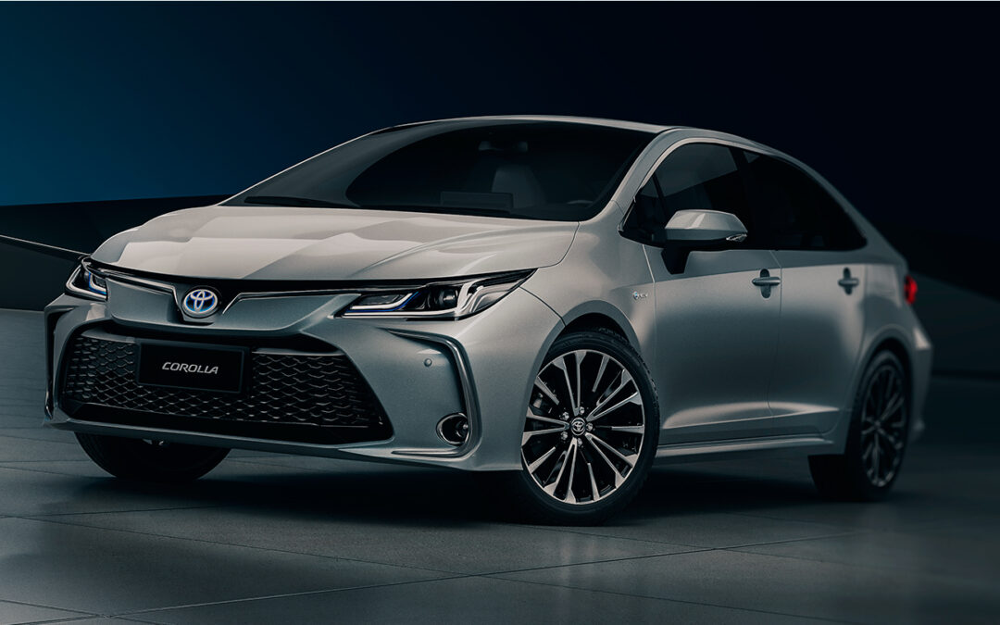

ASESORAMIENTO AUTOMOTOR
Encontrá el auto que realmente necesitás.
Te ayudamos a conocer diferentes tipos de vehículos, comparar sus características y encontrar una opción adecuada para tu estilo de vida.
Solicitar asesoramientoCONOCÉ TUS OPCIONES
Elegir un auto también es una decisión.
Cada vehículo tiene características diferentes. Tamaño, consumo, comodidad, rendimiento y tecnología son algunos de los aspectos que conviene tener en cuenta antes de elegir.
CATEGORÍAS
Conocé los diferentes estilos

ASESORAMIENTO
No todos buscan el mismo auto.
Antes de elegir un vehículo es importante pensar en el uso que se le va a dar. No es lo mismo buscar un auto para utilizar diariamente en la ciudad que uno pensado para viajes largos o para disfrutar de su rendimiento.
Ver asesoramiento¿No sabés qué vehículo elegir?
Completá nuestro formulario y contanos qué estás buscando. Podemos orientarte según tus necesidades y preferencias.
Comenzar consulta